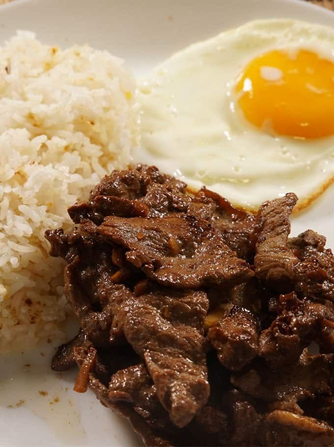

Tapsilog

Description
Tapsilog is a beloved Filipino breakfast dish that harmoniously blends
savory flavors and textures. At its heart is tender slices of beef,
marinated in a mixture of soy sauce, vinegar, garlic, and sugar to create
tapa, which is then pan-fried to caramelized perfection. This flavorful
beef is served alongside sinangag, garlic-fried rice that boasts a
tantalizing aroma and a satisfying crunch.
Completing the trio is a sunny-side-up fried egg, with its rich, golden
yolk adding a luxurious touch to the dish. Tapsilog captures the essence
of Filipino comfort food, offering a hearty start to the day that's
both filling and deeply satisfying.
Ingredients
Tapa (Marinated Beef):
- 1 lb beef sirloin or flank steak, thinly sliced against the grain
- 4 cloves garlic, minced
- 2 tablespoons soy sauce
- 1 tablespoon oyster sauce
- 1 tablespoon brown sugar
- 1 tablespoon vinegar
- 1/2 teaspoon ground black pepper
- cooking oil, for frying
Sinangag (Garlic Fried Rice)
- 4 cups cooked rice, preferably day-old and chilled
- 4 cloves garlic, minced
- 2 tablespoons cooking oil
- Salt, to taste
Fried Egg
- Egg
- Cooking oil, for frying
- Salt and pepper, to taste
Optional Garnishes
- Thinly sliced tomatoes
- Sliced cucumber
- Atchara (pickled green papaya)
Assembly
- Arrange a serving of sinangag (garlic fried rice) on a plate.
- Top with a portion of the cooked tapa (marinated beef).
- Fry the egg according to your preference.
- Serve with a fried egg on the side.
- Garnish with sliced tomatoes, cucumber, and atchara if desired.
Enjoy your delicious tapsilog! Adjust seasoning and cooking times
according to your taste preferences for each component.